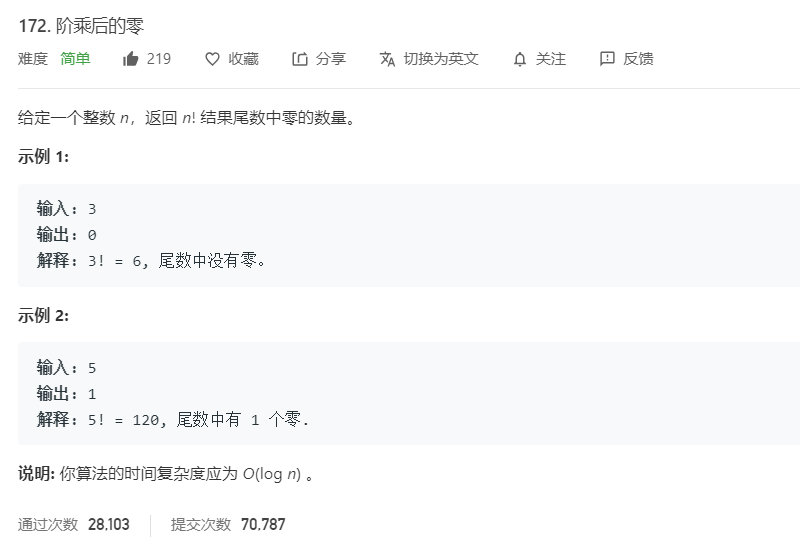

1.题目相关
①题目及示例

②相关标签
- 数学
③题目地址
2.解题方法
①暴力解法（超时）
- 思路：已知
2 * 5 = 10，所以尾数中零的数量只与2和5有关 。由此可知，我们只需要关注N!中作为乘法因子的2的数量和5的数量，最后计算Math.min(count(2), count(5))即可。 - 深入分析 1：
2的数量一定比5的数量多，所以只需要考虑5的数量（即统计小于或等于N的5的倍数们能拆分成多少个5）。
②数学规律
- 深入分析 2：通过观察
5的倍数（5 10 15 20 25 30 35 40 45 50 55 60 65 70 75 80 85 90 95 100 105 110 115 120 125 ……），可以发现对于N!的乘积因子来说，每隔 5 个数出现一个5，每隔 25 个数出现两个5，每隔 125 个数出现三个5，以此类推，每隔5^i个数出现i个5，最终5的个数就是N / 5 + N / 25 + N / 125 + ...。 - 时间复杂度：O(log n)
- 空间复杂度：O(1)
3.代码详解
①暴力解法（超时）
1 | public int trailingZeroes(int n) { |
②数学规律
1 | public int trailingZeroes(int n) { |
附录
- 我的个人博客：messi1002.top
- 如有错误或疑惑之处 请联系 wjymessi@163.com
- 关于 数据结构与算法 的更多代码 请查看我的 GitHub仓库